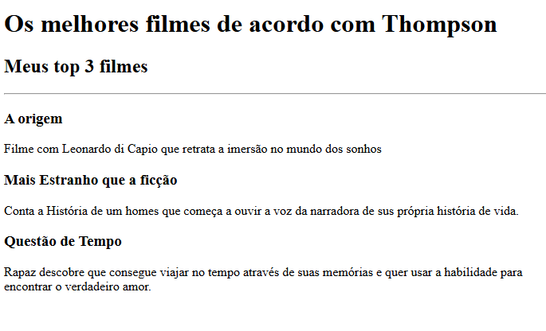

Portifólio de Thompson
Eu sou um desenvolvedor
Esses são alguns dos projetos que eu fiz até o momento!
Projeto de Ranking de Filmes Favoritos

Projeto de Celebração de Aniversário de Namoro
Sobre mim
Entre em Contato